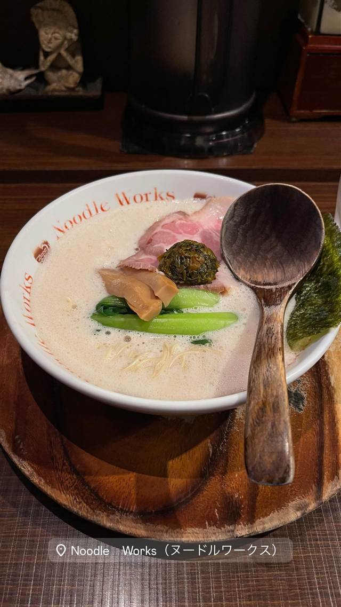
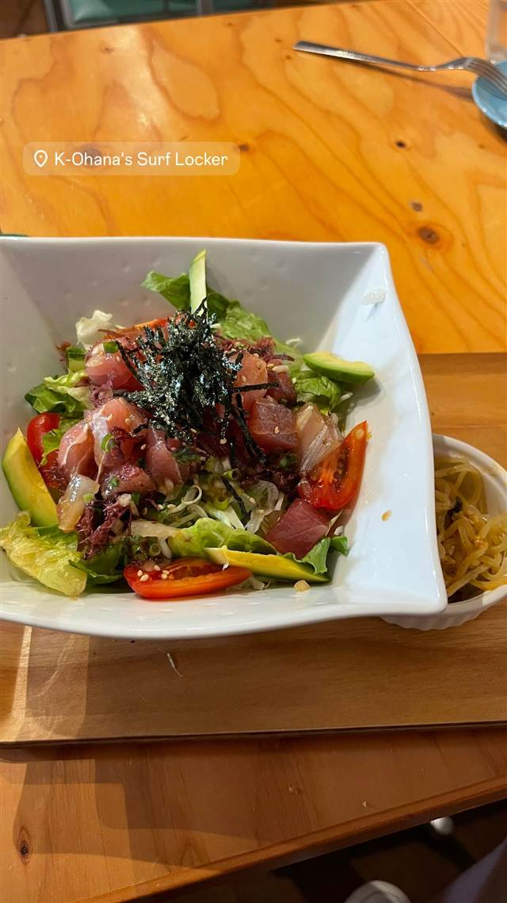
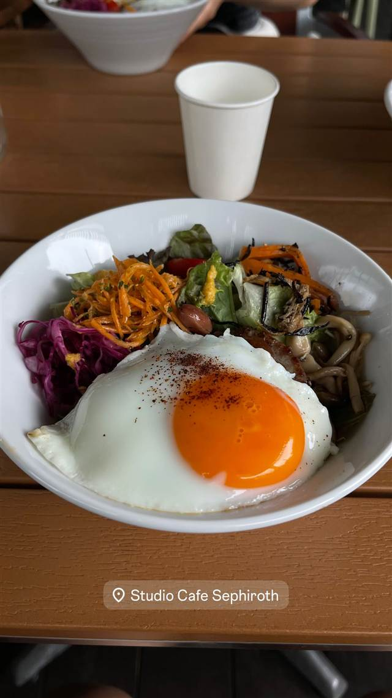

大分ラーメン ヌードルワークス 茅ヶ崎店
牛骨と鶏ガラも合わせた大分とんこつの泡らぅめん
Noodle Works（ヌードルワークス）
「Noodle Works」は2014年に茅ヶ崎にオープンした大分とんこつラーメン店。店主は横浜の名店「たまがった」で約10年修行し、豚骨に牛骨・鶏ガラを合わせたスープと、バリ島風のおしゃれな内装が特徴。
TRIVIA
豆知識
- スープに牛骨も使うのは大分とんこつラーメンとしては珍しい
- 内装はバリ島をイメージしている
REVIEWS
世間の評判
94.2ラーメンDB3.62食べログ
評判高い泡系豚骨の食べやすさ
- 泡系のシャレた豚骨スープを評価する声が多い
- とんこつ系だが胃にもたれず食べやすいと感じる声もある
- 青梗菜や辛子高菜など一部のトッピングは必要性を感じないという声もある
ラーメンデータベース 口コミ76件・総合500位・最新 2026-08
| 創業 | 2014年10月、茅ヶ崎にオープン（2018年5月には藤沢店も開業） |
|---|---|
| 系譜 | 店主は横浜のラーメン店「たまがった」で約10年修行してから独立 |
| 看板 | 大分とんこつラーメン「泡らぅめん」 |
| こだわり | 豚骨をベースに牛骨・鶏ガラも合わせたスープ。バリ島をイメージしたおしゃれな内装 |
| 掲載・評価 | TRYを受賞した大分豚骨ラーメンとして紹介されている（詳細未確認） |
| どこから | 日帰りで行ける遠さ |
| 営業時間 | 月・火 11:00-15:00、18:00-22:00 水 休み 木〜土 11:00-15:00、18:00-22:00 日 休み |
| 予算 | 昼 ¥1,000～¥1,999 夜 ¥1,000～¥1,999 |
| 定休日 | 水曜・日曜 |
| 予約 | 予約不可 |
| 場所 | 茅ヶ崎駅 神奈川県茅ヶ崎市元町2-15 |
食べたもの：ラーメン
ひとりで入りやすい
OFFICIAL
店からの知らせ
その日の限定や臨時の休みは、店のXに出ます。
NEARBY
近い店・同じ系統の店
-
 ★
豚骨 東高円寺駅
豚骨 蒼翔
クラウドファンディングで開業、鶏を使わない家系風豚骨
昼 ¥1,000～¥1,999 夜 ¥1,000～¥1,999
★
豚骨 東高円寺駅
豚骨 蒼翔
クラウドファンディングで開業、鶏を使わない家系風豚骨
昼 ¥1,000～¥1,999 夜 ¥1,000～¥1,999
-
 ★
豚骨 三ツ境駅
ラーメンショップ 二ツ橋店
二郎顔負けの分厚いチャーシューをのせるネギラーメン
昼 ～¥999 夜 ¥1,000～¥1,999
★
豚骨 三ツ境駅
ラーメンショップ 二ツ橋店
二郎顔負けの分厚いチャーシューをのせるネギラーメン
昼 ～¥999 夜 ¥1,000～¥1,999
-
 ★
豚骨 京急川崎駅
自家製麺 麺屋 利八
1日熟成させた自家製太麺と吊るし焼きチャーシューの鶏白湯
昼 ¥1,000～¥1,999 夜 ¥1,000～¥1,999
★
豚骨 京急川崎駅
自家製麺 麺屋 利八
1日熟成させた自家製太麺と吊るし焼きチャーシューの鶏白湯
昼 ¥1,000～¥1,999 夜 ¥1,000～¥1,999
-
 ★
豚骨 赤坂見附駅
なかご
豚骨100%なのに透き通る24時間煮込みの純粋豚そば
昼 ¥1,000～¥1,999 夜 ¥1,000～¥1,999
★
豚骨 赤坂見附駅
なかご
豚骨100%なのに透き通る24時間煮込みの純粋豚そば
昼 ¥1,000～¥1,999 夜 ¥1,000～¥1,999
-

サラダ 茅ヶ崎駅徒歩11分 K-Ohana's Surf Locker & Cafe Dining 自宅BBQに友人が集まりすぎ誕生、自家製グレイビーのロコモコ 昼 ¥1,000～¥1,999 夜 ¥1,000～¥1,999 -

ブランチ 茅ヶ崎駅徒歩22分 Studio Cafe Sephiroth(スタジオ カフェ セフィロス) 1階カフェ・2階レンタルスタジオの複合施設、ヴィーガンと体に優しい肉料理 昼 ¥1,000～¥1,999